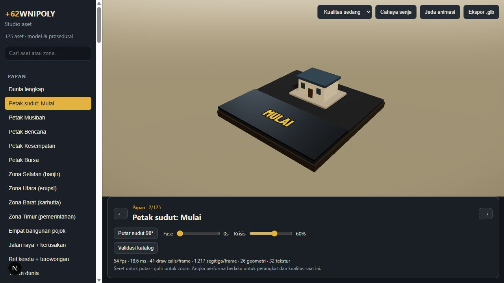
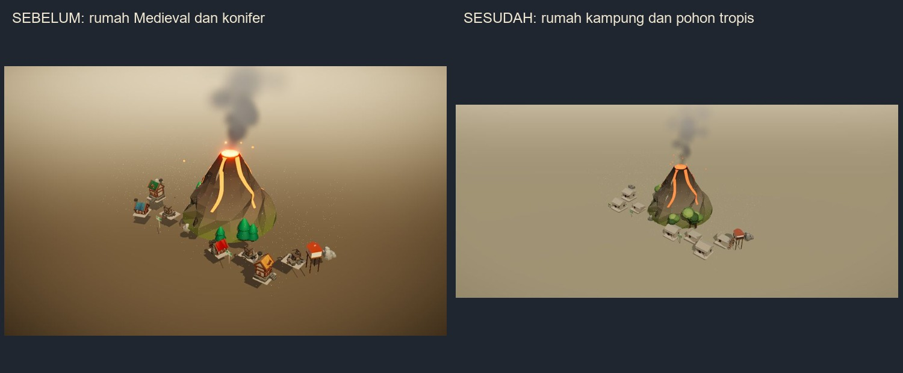
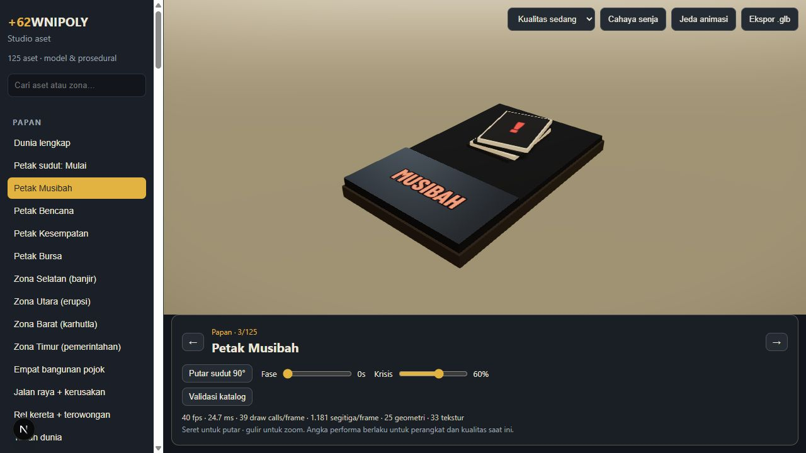
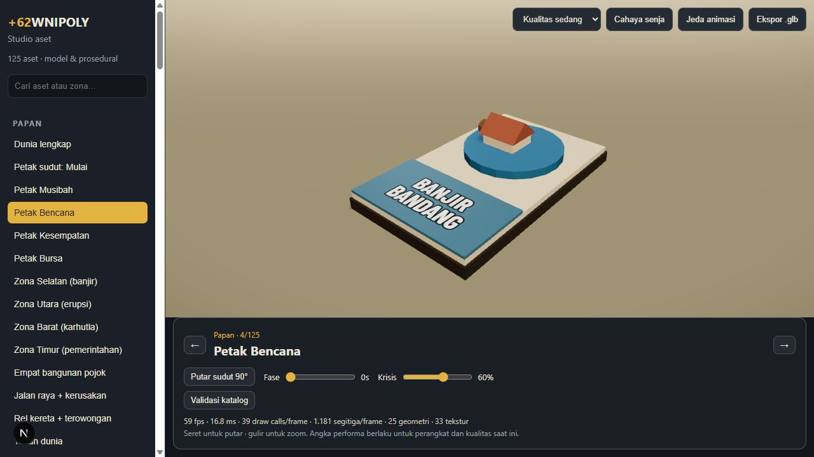
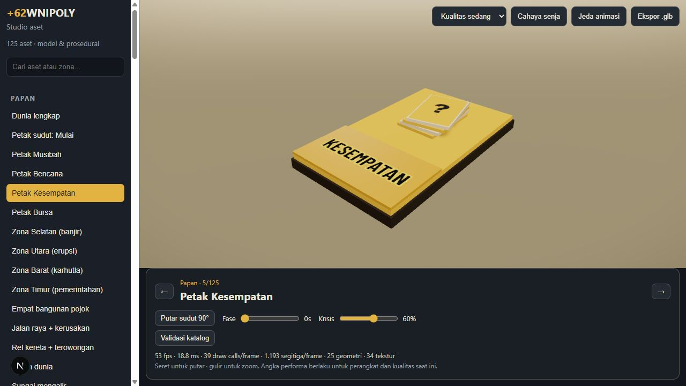
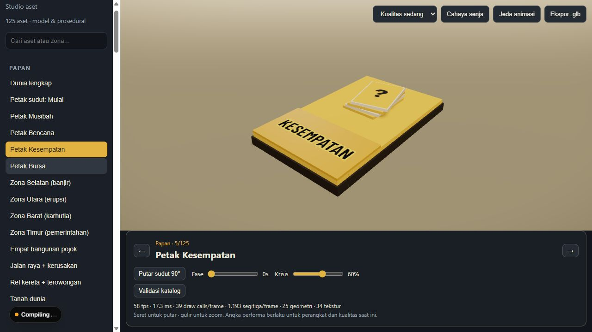
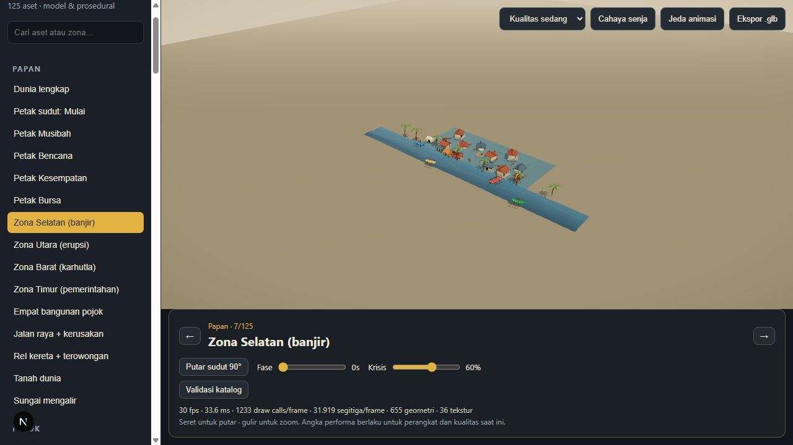
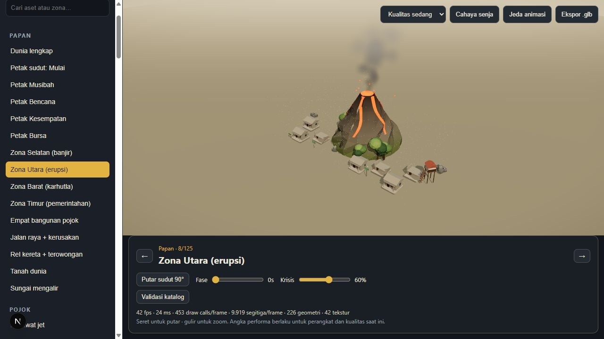

002 Petak sudut: Mulai

Foto parsial pada tahap implementasi, sebelum optimasi terakhir. Pemeriksaan browser sempat lulus 125/125 koordinat/transform; perekaman ulang kemudian terhenti. Tidak ada klaim seluruh 125 aset telah dinilai ulang dari foto akhir.
Catatan implementasi dan validasi · Buka katalog lokal







